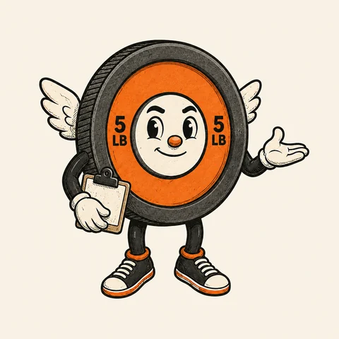
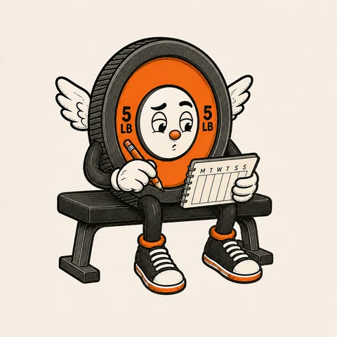
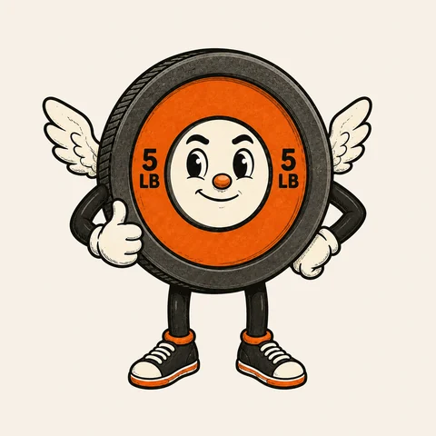

A little more Pumpy.
A familiar face, a few useful words, and room to get on with your workout.

Here to help
A calm introduction, and a pointer when you need one.

Make a little room
Your saved workouts, with a place in your week.

That’s work done
A quiet nod to the session you finished.
A small movement
Just the wings. One gentle beat, then still.